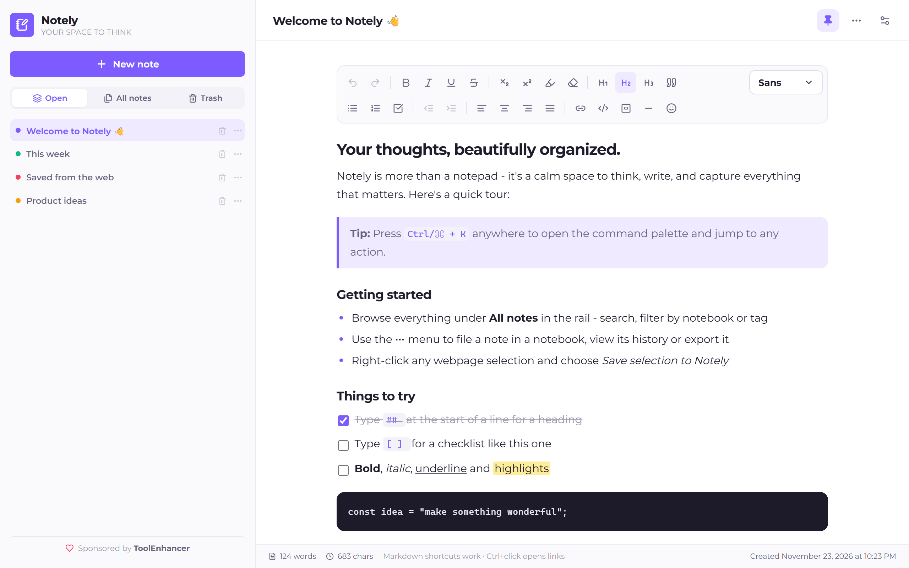

Notely
Your private notepad,
right in the side panel.
Rich text, Markdown shortcuts, checklists, web clipper and version history. Everything stays on your device.
100% local
No account
Open source
github.com/Toolvanta/notely
♥ Sponsored by ToolEnhancer
